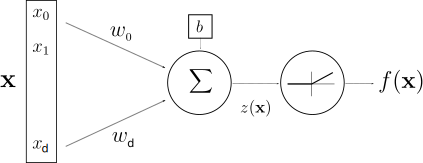

class: left, middle # The unreasonable effectiveness of CNNs - 19h: Welcome - 19h10: Intro to CNNs - 19h40: DigiFarm - 20h10: Visual intelligence in medicine and health, marine science, industry, energy, and earth observation --- class: center, middle # The unreasonable effectiveness of CNNs * Christopher Coello, data shepherd (*) ref to [Karpathy's blog entry](http://karpathy.github.io/2015/05/21/rnn-effectiveness/) from 2015 Slides avalaible: [https://github.com/ChrCoello/Slides-PARK-CNN](https://github.com/ChrCoello/Slides-PARK-CNN) --- # Path - Data as image - Supervised Learning - Deep Learning - Convolutional Neural Networks (CNNs) .center[ ] --- # Data as image .center[ ] .center[ ] --- # Data as image .center[ ] - Greyscale image: $x = (x(1), x(2), ..., x(d))$ where $x(i)$ contains the intensity value of pixel $i$ -- - Color image: $x = (x(1), x(2), ..., x(d))$ where $x(i)$ contains the RGB values of pixel $i$ -- - This means that: - for a 200x200 image, $d$=40k - for a 512x512 image, $d$=262k - for a 1920x1080 image, $d$=2M - **High dimensional** data ($x \in \mathbb{R}^d$) --- # Data as image - Natural images of objects are highly structured - Example of random image .center[ ] - Learn to recognize the structure in natural images --- # Supervised learning tasks .center[ ] - **Classification**: estimate a class label $f(x)$ given $n$ known samples $(x\_i,y\_i=f(x\_i))\_{i\leq n}$ -- - Huge variability inside classes -- - ** Find invariants ** -- - Other vision related tasks: regression, segmentation, object detection, etc.... --- # Vision tasks .center[ <img src="images/vision_tasks.png" style="width: 770px;" /> ] --- # Learning algorithms - Estimate the label $y$ knowing the input $x$ .center[ <img src="images/sup_learn_01.png" style="width: 500px;" /> ] -- - Use the examples to learn .center[ <img src="images/sup_learn_04.png" style="width: 500px;" /> ] --- # Learning algorithms - Use the examples to learn .center[ <img src="images/sup_learn_04.png" style="width: 500px;" /> ] - **Supervised learning**: optimise parameters to make as little error on examples as possible $\tilde{y_i}\approx y_i$ .center[ <img src="images/sounds.jpg" style="width: 300px;" /> ] --- # Learning algorithms - Use the examples to learn .center[<img src="images/sup_learn_04.png" style="width: 500px;" />] - **Supervised learning**: optimise parameters to make as little error on examples as possible $\tilde{y_i}\approx y_i$ - ** Generalisation ** if minimum error on unknown example $x$, $\tilde{y} \approx y$ -- - Algorithms $\longleftrightarrow$ Mathematics --- # Let's get labels - Getting labels is expensive -- - ** Unsupervised learning ** .center[ <img src="images/unsup_learn.png" style="width: 600px;" /> ] -- - Does not work in high dimension --- # Curse of Dimensionality - $f(x)$ can be approximated from examples $(x\_i,f(x\_i))\_{i \leq n}$ if **there are close examples** and if $f$ is regular. -- - To cover $[0, 1]^d$ at a distance 0.1 we need $10^d$ examples .center[ <img src="images/curse_of_dim.svg" style="width: 400px;" /> ] -- - $10^{80}$ atoms in the universe - distance btw unseen image and examples is **ALWAYS** very large --- # Cluster and linearize .center[ ] - change of variable: $x=(x_1,x_2,x_3,...,x_d) \rightarrow \phi (x) = (v_1,v_2,v_3,...,v_c)$ -- - how and when is possible to find such a $\phi$ ? - apriori information: two/four large circles, number of all green pixels - learned --- # Artificial Neuron .center[ <br /> McCulloch & Pitts (1943): inspiration from biological neurons, but simplistic model with no will to be close to biology ] -- .center[ <br /> By <a href="https://en.wikipedia.org/wiki/User:Quasar_Jarosz" class="extiw" title="wikipedia:User:Quasar Jarosz">Quasar Jarosz</a> at <a href="https://en.wikipedia.org/wiki/" class="extiw" title="wikipedia:">English Wikipedia</a>, <a href="https://creativecommons.org/licenses/by-sa/3.0" title="Creative Commons Attribution-Share Alike 3.0">CC BY-SA 3.0</a>, <a href="https://commons.wikimedia.org/w/index.php?curid=7616130">Link</a> ] --- # (Deep) neural network .center[ ] --- # (Deep) neural network .center[ ] - Learning: optimise the parameters ($w\_{i,j}$) to minimize errors on examples - Tens of millions of parameters: more parameters than the initial dimension of our data -- - **A priori information**: in the architecture of the network --- # Convolutional neural network --- # Now to the applications ! .center[ <small>Twitter: <a target="_blank" rel="noopener noreferrer" href="https://twitter.com/ChrCoello">@ChrCoello<a /></small> ] .center[ <small>LinkedIn: <a target="_blank" rel="noopener noreferrer" href="https://www.linkedin.com/in/chrcoello/">@ChrCoello<a /></small> ]